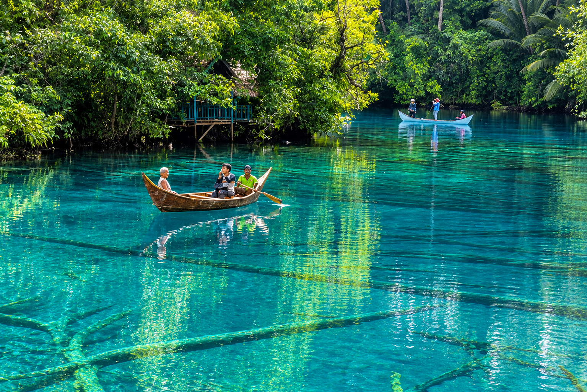

Alam yang Asri
Jelajahi bentang alam tropis dan potensi lingkungan yang menawarkan pengalaman dekat dengan alam.
Temukan pesona alam tropis, kehidupan pesisir, dan kekayaan budaya di sudut indah Sulawesi Tengah.

Balantak Utara merupakan sebuah kecamatan di Kabupaten Banggai, Provinsi Sulawesi Tengah. Wilayah ini menjadi bagian dari kawasan yang menyimpan potensi alam, kehidupan masyarakat, dan kekayaan lokal yang menarik untuk dikenal lebih dekat.
Melalui website ini, mari mengenal potensi pariwisata, kehidupan pesisir, serta sumber daya alam yang dapat dikembangkan dengan memperhatikan kelestarian lingkungan dan kesejahteraan masyarakat.
Kenali Balantak Utara →Alam, budaya, dan aktivitas masyarakat membentuk cerita yang layak dikenal.
Jelajahi bentang alam tropis dan potensi lingkungan yang menawarkan pengalaman dekat dengan alam.
Kenali tradisi, pengetahuan lokal, dan keramahan masyarakat yang menjadi bagian dari identitas daerah.
Temukan peran perikanan dan kehidupan pesisir dalam menopang ekonomi serta keseharian masyarakat.
Balantak Utara berada di Kabupaten Banggai, Provinsi Sulawesi Tengah, Indonesia. Kenali letak wilayahnya sebelum merencanakan perjalanan.
Informasi rute, akses transportasi, dan titik destinasi perlu disesuaikan dengan kondisi lapangan serta sumber resmi setempat.
Lihat Peta Lengkap ↗Ilustrasi lokasi. Bukan peta batas administrasi.
Mengenal satwa dan ekosistem yang menjadi bagian dari kekayaan alam Sulawesi dan perairan tropis.

Burung khas Sulawesi yang memiliki perilaku reproduksi unik.

Mamalia laut yang berperan dalam keseimbangan ekosistem perairan.

Pari manta merupakan ikan bertulang rawan berukuran besar yang hidup di laut.

Habitat penting bagi berbagai organisme dan biodiversitas laut tropis.
Gambar merupakan ilustrasi. Keberadaan spesies di lokasi tertentu perlu diverifikasi melalui data pengamatan dan sumber setempat.
Inspirasi aktivitas yang dapat disesuaikan dengan ketersediaan destinasi dan pengelola lokal.
 PANTAI & PULAU
PANTAI & PULAU
Inspirasi perjalanan menikmati panorama pulau dan pesisir.
 BAHARI
BAHARI
Pengalaman bahari untuk mengenal kehidupan bawah laut.
 BUDAYA
BUDAYA
Kenali kehidupan, kuliner, dan pengetahuan masyarakat lokal.
Harga merupakan simulasi desain, bukan tarif resmi. Konfirmasikan akses, operator, dan ketersediaan aktivitas sebelum perjalanan.
Artikel pengenalan tentang pariwisata, budaya, dan pelestarian alam.

Menilik peluang wisata alam dengan pendekatan yang bertanggung jawab.
Baca Selengkapnya →
Mengapa kelestarian lingkungan perlu menjadi bagian dari pariwisata.
Baca Selengkapnya →
Peran pengetahuan dan tradisi lokal dalam pengalaman wisata.
Baca Selengkapnya →Tanggal dan judul di atas merupakan contoh konten demonstrasi, bukan laporan berita faktual.
Ruang kolaborasi untuk komunitas, pelaku usaha, dan pengelola wisata setempat.
Nama di atas merupakan kategori calon mitra, bukan pernyataan kerja sama resmi.